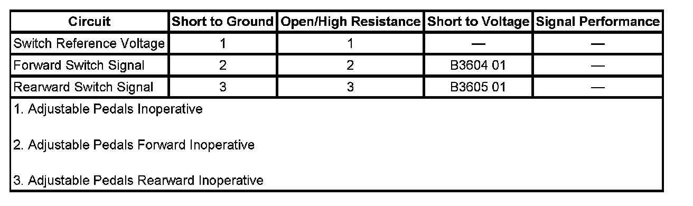

B3605
DTC B3604 or B3605
DTC DESCRIPTOR
DTC B3604 01
Adjustable Foot Pedal Forward Switch Circuit Short to Battery
DTC B3605 01
Adjustable Foot Pedal Rearward Switch Circuit Short to Battery
DIAGNOSTIC FAULT INFORMATION

Perform the Diagnostic System Check - Vehicle prior to using this diagnostic procedure. Initial Inspection and Diagnostic Overview
CIRCUIT/SYSTEM DESCRIPTION
The adjustable pedals forward and rearward switches are inputs to the memory seat module. The memory seat module supplies the switch assembly with a battery positive reference voltage. When the switch is operated to the forward or rearward direction, battery positive voltage is applied to the forward or rearward switch signal inputs.
CONDITIONS FOR RUNNING THE DTC
System voltage to the memory seat module must be 9-16 volts.
CONDITIONS FOR SETTING THE DTC
The forward and rearward switch signal circuits are active at the same time.
ACTION TAKEN WHEN THE DTC SETS
The adjustable pedals will be disabled.
CONDITIONS FOR CLEARING THE DTC
The fault is no longer present.
CIRCUIT/SYSTEM TESTING
1. Disconnect the adjustable pedal switch connector.
2. Ignition ON, verify that both adjustable pedal switch parameters to the memory seat module are Inactive.
- If 1 of the switch parameters is always Active test the affected switch signal circuit for a short to voltage. If the signal circuit tests normal replace the memory seat module.
3. If the circuit tests normal replace the adjustable pedal switch.
REPAIR INSTRUCTIONS
Perform the Diagnostic Repair Verification Diagnostic Repair Verification after completing the diagnostic procedure. Verification Tests
Control Module References for the memory seat module replacement and setup procedures Programming and Relearning